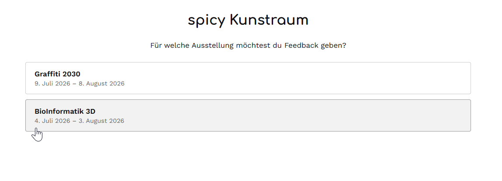
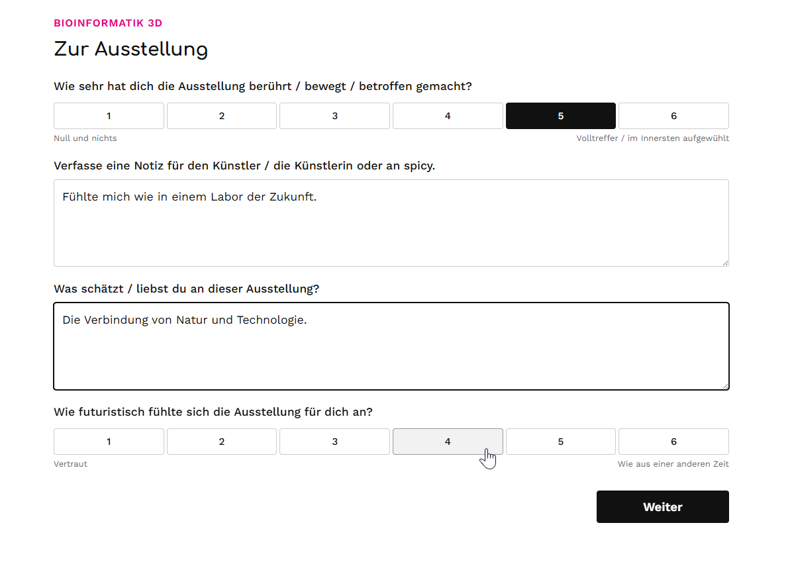
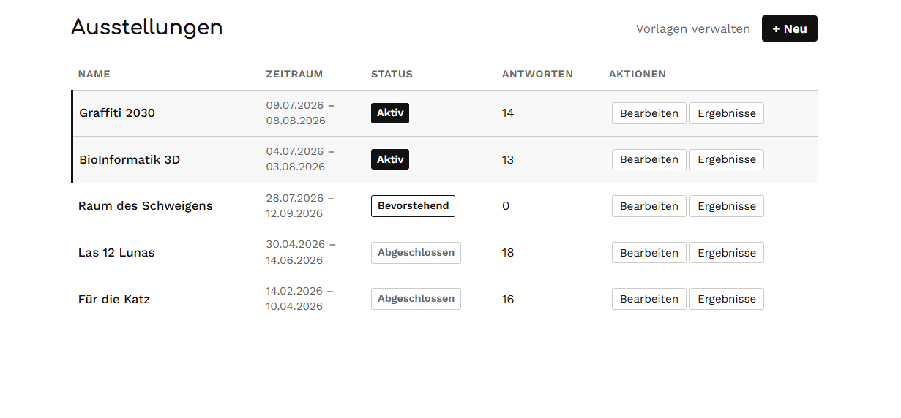
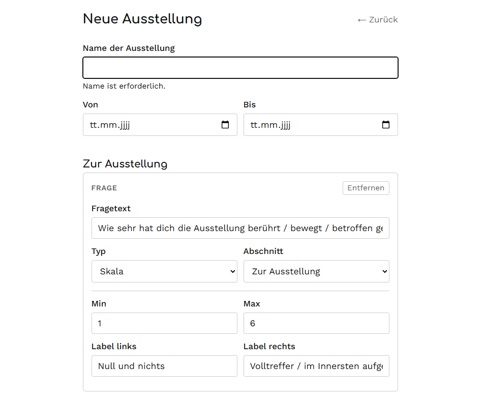
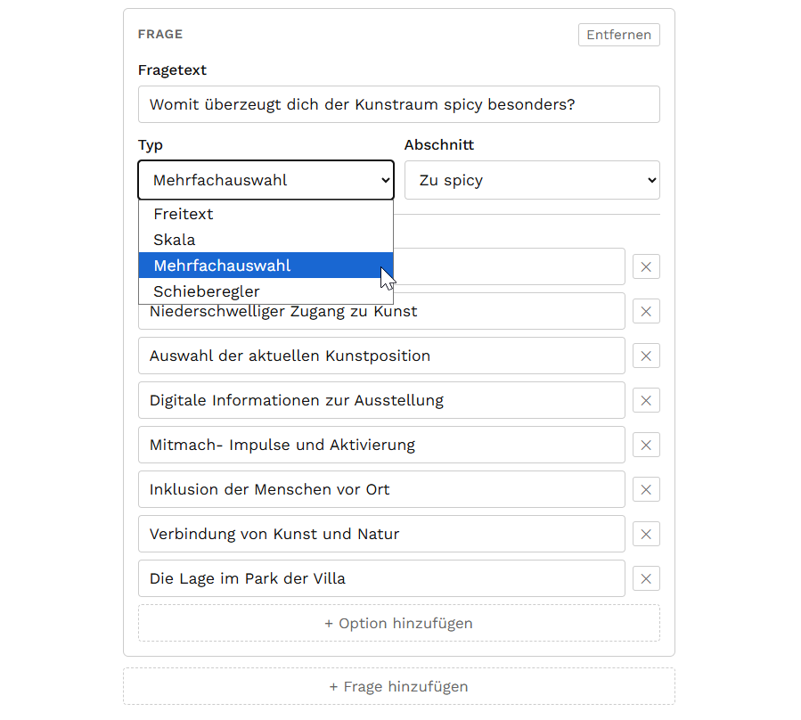
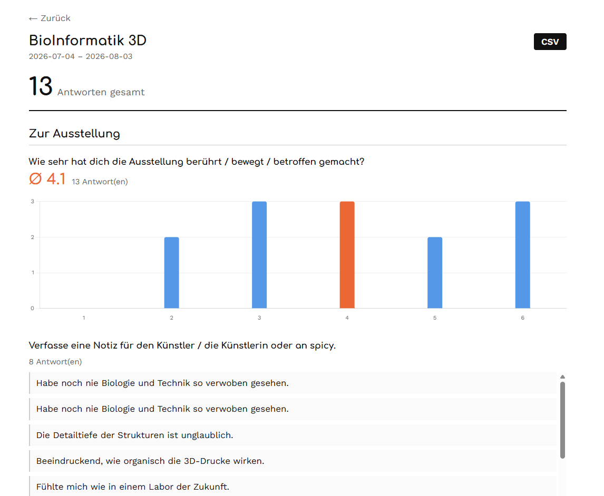
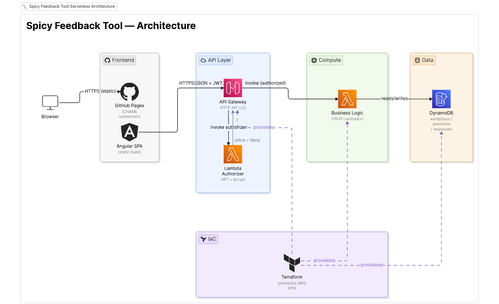

Spicy Feedback Tool
Konfigurierbare Feedback-Umfragen für Kunstausstellungen
Kontext
Spicy Feedback Tool entstand aus einer konkreten Anfrage. Kunstraum, ein Ausstellungsraum für zeitgenössische Kunst, brauchte eine einfache Möglichkeit, Feedback von seinen Besuchern zu sammeln, ohne auf Papier oder generische Tools angewiesen zu sein, die nicht zur eigenen Identität passten. Statt eines starren Formulars entwickelte ich etwas Flexibleres: ein vollständig konfigurierbares Umfragesystem, mit dem der Kunde selbst seine Fragen erstellen und anpassen kann, ohne für jede Änderung auf mich angewiesen zu sein.
Rundgang durch die Anwendung
Ausstellung wählen
Der Besucher wählt zuerst aus, für welche Ausstellung er Feedback geben möchte. Eine minimale, reibungslose Oberfläche, gedacht für die Nutzung am Smartphone, im Stehen, direkt im Ausstellungsraum.

Umfrage
Jede Ausstellung hat ihren eigenen Fragensatz: Skalen, Freitext, Mehrfachauswahl. Kein generisches Formular, die Fragen ändern sich je nachdem, was Kunstraum zu jeder Ausstellung wissen möchte.

Verwaltung der Ausstellungen
Von hier aus verwaltet der Kunde alle seine Ausstellungen: Status (aktiv, bevorstehend, abgeschlossen), Datumsbereich und Anzahl der eingegangenen Antworten, ganz ohne mich dafür zu brauchen.

Neue Ausstellung
Eine neue Ausstellung anzulegen ist so einfach wie Name und Datum einzutragen. Die Konfiguration der Fragen erfolgt im nächsten, separaten Schritt.

Neue Frage
Hier liegt das Herzstück von Spicy Feedback Tool: Jede Frage wird mit ihrem Typ (Freitext, Skala, Mehrfachauswahl oder Schieberegler) und ihrem Abschnitt innerhalb der Umfrage definiert. Das ist es, was das System wirklich konfigurierbar macht, und nicht nur ein Formular, das so aussieht.

Dashboard
Jede Ausstellung hat ihr eigenes Ergebnis-Dashboard: Durchschnittswerte zu den Skalenfragen, ein Diagramm zur Verteilung der Antworten und die gesammelten Freitextkommentare, mit CSV-Export.

Architektur

Die Anwendung ist vollständig serverless. Das Angular-Frontend wird als statische Seite über GitHub Pages ausgeliefert. Jede authentifizierte Anfrage durchläuft zuerst einen Lambda Authorizer, der das JWT validiert, bevor die Anfrage die Business-Lambda erreicht, die für das Lesen und Schreiben in DynamoDB zuständig ist. Die gesamte Infrastruktur (API Gateway, Lambdas, DynamoDB) ist mit Terraform als Code definiert.
Stack
| Ebene | Technologie |
|---|---|
| Frontend | Angular 21 (SPA), gehostet auf GitHub Pages |
| API | API Gateway HTTP API (v2) |
| Authentifizierung | Eigenes JWT mit Lambda Authorizer, bcrypt |
| Backend | AWS Lambda |
| Datenbank | AWS DynamoDB |
| Infrastruktur | Terraform (IaC) |
| Grafiken | Chart.js (ng2-charts) |
Was ich gemacht habe
- Ein konfigurierbares Fragensystem mit vier Typen (Freitext, Skala, Mehrfachauswahl und Schieberegler) entworfen, das der Kunde verwaltet, ohne Code anzufassen.
- Das Frontend in Angular und das serverless Backend mit AWS Lambda und API Gateway gebaut.
- Eine eigene Authentifizierung mit JWT und einem Lambda Authorizer implementiert, mit Passwort-Hashing über bcrypt.
- Die gesamte Infrastruktur als Code mit Terraform definiert, damit das Deployment von Anfang an reproduzierbar war.
- Die Datenarchitektur mitten im Projekt neu entworfen: von einem Modell, in dem ein Teil der Konfiguration im Code selbst lag, zu einem vollständig datenbankgesteuerten System gewechselt, was das System wirklich flexibel machte, statt es nur so aussehen zu lassen.
Technische Herausforderung
Das ist kein komplexes Projekt im Sinne von Algorithmen oder Skalierung. Es ist vor allem eine Übung in Urteilsvermögen: zu wissen, wann man nicht überengineert. Die übliche Falle bei solchen Tools ist, etwas zu bauen, das konfigurierbar aussieht, in der Praxis aber weiterhin für jede Änderung einen Entwickler braucht. Das Datenmodell mitten im Projekt so umzubauen, dass die gesamte Konfiguration in der Datenbank lebt, war die Entscheidung, die Spicy Feedback Tool wirklich flexibel machte, nicht nur dem Anschein nach. Und das, obwohl es sich in einer Fünf-Minuten-Demo nicht zeigt, ist der Teil, auf den ich am meisten stolz bin.
Ergebnis & Learnings
Wenn Spicy seine eigene Umfrage über sich selbst hätte, würde die Frage lauten: "Wie viele Chilis gibst du diesem Projekt?". Meine ehrliche Antwort ist 6 von 6 🌶️🌶️🌶️🌶️🌶️🌶️, allerdings nicht wegen der Technik: wegen der Zufriedenheit, etwas Einfaches und Solides gebaut zu haben, das ein echter Kunde genau dieses Wochenende nutzen wird.